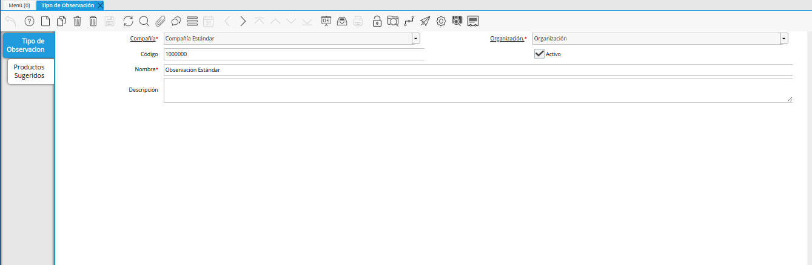

Tipo de Observación¶
Un tipo de observación puede ser creado para indicar o realizar una sugerencia de un producto a un rubro determinado, en cual se indica la cantidad o dosis a aplicar a dicho rubro. Un ejemplo de ello puede ser, una observación que se realiza para que sea aplicado un insecticida a un rubro como maíz blanco u otro.
A continuación, se explica el procedimiento que se debe realizar para generar de manera correcta, un tipo de observación en ADempiere.
Ubique y seleccione en el menú de ADempiere, la carpeta “Gestión de Asistencia al Agricultor”, luego seleccione la carpeta “Configuración de Asistencia Técnica”, por último seleccione la carpeta “Configuración de Cultivo”. Finalmente, seleccione la ventana “Tipo de Observación”.
Imagen 1. Tipo de Observación

Podrá visualizar la ventana “Tipo de Observación”, con los diferentes registros de tipos de observación.

Imagen 2. Ventana Tipo de Observación
Seleccione el icono “Registro Nuevo”, ubicado en la barra de herramientas de ADempiere y proceda al llenado de los campos correspondientes.
Imagen 3. Icono Registro Nuevo
Seleccione en el campo “Organización”, la organización para la cual requiere generar el registro de tipo de observación.
Imagen 4. Campo Organización

Introduzca en el campo “Código”, el código correspondiente al registro de tipo de observación que se encuentra realizando.
Si no es ingresado ningún valor en el presente campo, al guargar el registro ADempiere establece de manera automática un correlativo correspondiente a la secuencia de documento que se encuentra realizando.
Imagen 5. Campo Código

Introduzca en el campo “Nombre”, el nombre correspondiente al registro de tipo de observación que se encuentra realizando.
Imagen 6. Campo Nombre

Introduzca en el campo “Descripción”, una breve descripción referente al registro de tipo de observación que se encuentra realizando.
Imagen 7. Campo Descripción

Seleccione el icono “Guardar Cambios”, ubicado en la barra de herramientas de ADempiere.
Imagen 8. Icono Guardar Cambios
Productos Sugeridos¶
Seleccione la pestaña “Productos Sugeridos” y proceda al llenado de los campos correspondientes.
Imagen 9. Pestaña Productos Sugeridos

Introduzca en el campo “Nombre”, el nombre correspondiente al producto sugerido que se encuentra registrando.
Imagen 10. Campo Nombre

Introduzca en el campo “Comentarios”, el comentario que requiere agregar al registro de producto sugerido que se encuentra realizando.
Imagen 11. Campo Comentarios

Seleccione en el campo “Rubro”, el rubro correspondiente al producto sugerido que se encuentra registrando.
Imagen 12. Campo Rubro
Al seleccionar un rubro en el campo “Rubro”, se habilita el campo “Etapa del Cultivo”.
Si el rubro seleccionado posee información en la pestaña “Etapa del Cultivo” correspondiente a su registro, la información puede ser seleccionada en el campo “Etapa del Cultivo”.
Imagen 13. Campo Etapa del Cultivo
Note
Al seleccionar la etapa del cultivo en el campo “Etapa del Cultivo”, se inhabilitan los campos “Día Desde” y “Día Hasta” porque los mismos se encuentran configurados en la etapa previamente seleccionadae.


Introduzca en el campo “Día Desde”, el día desde para el registro del producto sugerido que se encuentra realizando.
Imagen 14. Campo Día Desde

Introduzca en el campo “Día Hasta”, el día hasta para el registro del producto sugerido que se encuentra realizando.
Imagen 15. Campo Día Hasta

Seleccione en el campo “Tipo de Observación”, el tipo de observación para el registro de producto sugerido que se encuentra realizando.
Imagen 16. Campo Tipo de Observación

Introduzca en el campo “Secuencia”, la secuencia correspondiente al registro de producto sugerido que se encuentra realizando.
Imagen 17. Campo Secuencia

Seleccione en el campo “Categoría del Producto”, la categoría del producto correspondiente al registro de producto sugerido que se encuentra realizando.
Imagen 18. Campo Categoría del Producto
Note
Al seleccionar algún valor en este campo, se inhabilita el campo “Producto”.

Seleccione en el campo “Grupo de Producto”, el grupo del producto correspondiente al registro de producto sugerido que se encuentra realizando.
Imagen 19. Campo Grupo de Producto
Note
Al seleccionar algún valor en este campo, se inhabilita el campo “Producto”.

Seleccione en el campo “Clase de Producto”, la clase de producto correspondiente al registro de producto sugerido que se encuentra realizando.
Imagen 20. Camp Clase de Producto
Note
Al seleccionar algún valor en este campo, se inhabilita el campo “Producto”.

Seleccione en el campo “Clasificación de Producto”, la clasificación de producto correspondiente al registro de producto sugerido que se encuentra realizando.
Imagen 21. Campo Clasificación de Producto
Note
Al seleccionar algún valor en este campo, se inhabilita el campo “Producto”.

Seleccione en el campo “Producto”, el producto correspondiente al registro de producto sugerido que se encuentra realizando.
Imagen 22. Campo Producto
Note
En un caso de que se tenga un rubro como “Maíz Blanco”, un ejemplo de producto a seleccionar en el presente campo puede ser un insecticida para maíz como “Herbicida Agrícola Limpia Maiz Glifosan Gramoxone Potreron”.

Introduzca en el campo “Dosis por Área”, la cantidad de dosis por área de cultivo recomendada.
La cantidad ingresada va a depender de la unidad de medida del producto seleccionado en el campo “Producto”.
Imagen 23. Campo Dosis por Área

Seleccione el icono “Guardar Cambios”, ubicado en la barra de herramientas de ADempiere para guardar el registro de los campos de la ventana “Productos Sugeridos”.
Imagen 24. Icono Guardar Cambios